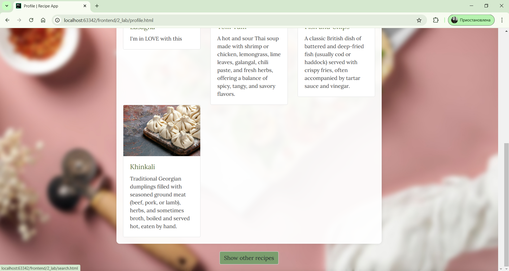
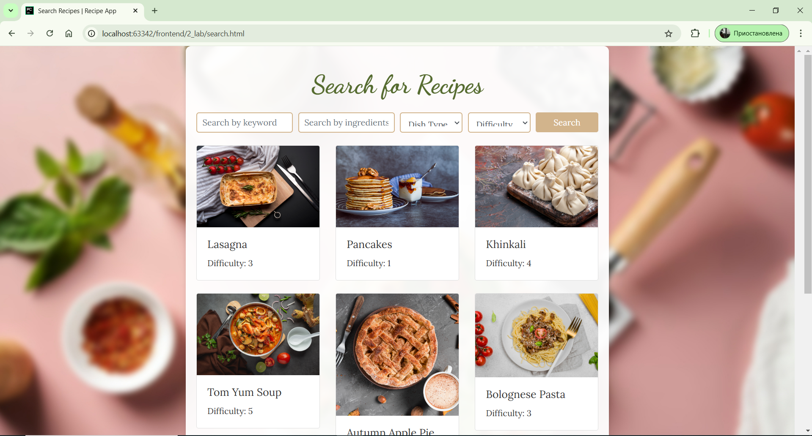

Страница для поиска рецептов с фильтрацией по типу блюда, сложности, ингредиентам
код из файла search.html:
<!DOCTYPE html>
<html lang="en">
<head>
<meta charset="UTF-8">
<meta name="viewport" content="width=device-width, initial-scale=1.0">
<title>Search Recipes | Recipe App</title>
<link rel="stylesheet" href="https://stackpath.bootstrapcdn.com/bootstrap/4.5.2/css/bootstrap.min.css">
<link rel="stylesheet" href="css/styles.css">
</head>
<body>
<div class="container">
<h2 class="text-center my-4">Search for Recipes</h2>
<form class="mb-4" id="searchForm">
<div class="form-row">
<div class="col-md-3">
<input type="text" class="form-control" placeholder="Search by keyword" id="searchQuery">
</div>
<div class="col-md-3">
<input type="text" class="form-control" placeholder="Search by ingredients" id="ingredientQuery">
</div>
<div class="col-md-2">
<select class="form-control" id="dishType">
<option value="">Dish Type</option>
<option value="breakfast">Breakfast</option>
<option value="lunch">Lunch</option>
<option value="dinner">Dinner</option>
</select>
</div>
<div class="col-md-2">
<select class="form-control" id="difficulty">
<option value="">Difficulty</option>
<option value="1">1 (Easy)</option>
<option value="2">2</option>
<option value="3">3</option>
<option value="4">4</option>
<option value="5">5 (Hard)</option>
</select>
</div>
<div class="col-md-2">
<button type="submit" class="btn btn-primary btn-block">Search</button>
</div>
</div>
</form>
<div class="row" id="recipesContainer">
<!-- Рецепты будут здесь -->
</div>
</div>
<script>
// Пример данных о рецептах
const recipes = [
{
title: 'Lasagna',
image: 'img/high-angle-view-tablecloth-fresh-ingredient-delicious-lasagna.jpg',
link: 'recipe_lasagna.html',
ingredients: ['pasta', 'cheese', 'tomato'],
type: 'dinner',
difficulty: 3
},
{
title: 'Pancakes',
image: 'img/fresh-pancakes-table-studio.jpg',
link: 'recipe_pancakes.html',
ingredients: ['flour', 'milk', 'egg'],
type: 'breakfast',
difficulty: 1
},
{
title: 'Khinkali',
image: 'img/side-close-up-view-khinkali-appetizing-khinkali-cutting-board.jpg',
link: 'recipe_khinkali.html',
ingredients: ['flour', 'meat', 'water'],
type: 'lunch',
difficulty: 4
},
{
title: 'Tom Yum Soup',
image: 'img/thai-food-tom-yum-seafood-seafood-spicy-soup.jpg',
link: 'recipe_tom_yum.html',
ingredients: ['shrimp', 'lemon grass', 'mushroom'],
type: 'dinner',
difficulty: 5
},
{
title: 'Autumn Apple Pie',
image: 'img/top-view-pie-coffee.jpg',
link: 'recipe_autumn_apple_pie.html',
ingredients: ['apples', 'sugar', 'cinnamon', 'pie crust'],
type: 'breakfast',
difficulty: 2
},
{
title: 'Bolognese Pasta',
image: 'img/delicious-plate-with-spaghetii-bolognese-desk.jpg',
link: 'recipe_bolognese_pasta.html',
ingredients: ['spaghetti', 'ground beef', 'tomato sauce', 'onion', 'garlic'],
type: 'dinner',
difficulty: 3
},
{
title: 'Fish and Chips',
image: 'img/fish-chips-bowl-with-lemon-clipboard.jpg',
link: 'recipe_fish_and_chips.html',
ingredients: ['fish', 'potatoes', 'batter'],
type: 'lunch',
difficulty: 2
},
{
title: 'English Full Breakfast',
image: 'img/traditional-full-english-breakfast-with-fried-eggs-sausage-tomato-beans-toast-bacon-plate.jpg',
link: 'recipe_english_full_breakfast.html',
ingredients: ['bacon', 'sausage', 'egg', 'beans', 'toast'],
type: 'breakfast',
difficulty: 2
},
];
// Функция отрисовки рецептов
function renderRecipes(filteredRecipes) {
const container = document.getElementById('recipesContainer');
container.innerHTML = ''; // Очищаем контейнер
filteredRecipes.forEach(recipe => {
const recipeCard = `
<div class="col-md-4 mb-4">
<div class="card">
<a href="${recipe.link}">
<img src="${recipe.image}" class="card-img-top" alt="${recipe.title}">
</a>
<div class="card-body">
<h5 class="card-title">${recipe.title}</h5>
<p class="card-text">Difficulty: ${recipe.difficulty}</p>
</div>
</div>
</div>
`;
container.insertAdjacentHTML('beforeend', recipeCard);
});
}
// Функция фильтрации рецептов
function filterRecipes() {
const searchQuery = document.getElementById('searchQuery').value.toLowerCase();
const ingredientQuery = document.getElementById('ingredientQuery').value.toLowerCase();
const dishType = document.getElementById('dishType').value;
const difficulty = document.getElementById('difficulty').value;
const filtered = recipes.filter(recipe => {
const matchesSearch = recipe.title.toLowerCase().includes(searchQuery);
const matchesDishType = dishType === '' || recipe.type === dishType;
const matchesDifficulty = difficulty === '' || recipe.difficulty === parseInt(difficulty);
// Фильтрация по ингредиентам
const matchesIngredients = ingredientQuery === '' || recipe.ingredients.some(ingredient =>
ingredient.toLowerCase().includes(ingredientQuery)
);
return matchesSearch && matchesDishType && matchesDifficulty && matchesIngredients;
});
renderRecipes(filtered);
}
// Обработчик формы поиска
document.getElementById('searchForm').addEventListener('submit', function(e) {
e.preventDefault(); // Предотвращаем перезагрузку страницы
filterRecipes(); // Вызываем фильтрацию
});
// Изначальная отрисовка всех рецептов
renderRecipes(recipes);
</script>
<script src="https://code.jquery.com/jquery-3.5.1.slim.min.js"></script>
<script src="https://cdn.jsdelivr.net/npm/@popperjs/core@2.9.2/dist/umd/popper.min.js"></script>
<script src="https://stackpath.bootstrapcdn.com/bootstrap/4.5.2/js/bootstrap.min.js"></script>
<script src="js/scripts.js"></script>
</body>
</html>
Кнопка для поиска рецептов на скриншоте  Страница поиска рецептов на скриншоте 